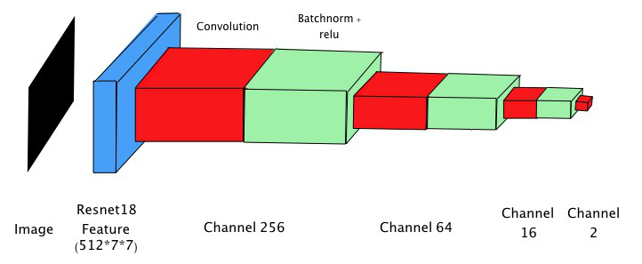

Implementation
CNN Model
我們主要的 model 架構為 fully convolution network，前面使用 resnet18 取 feature，接著使用四層 fully convolution layer 作為 regression layer。使用 resnet18 而非更深的 model是由於我們的 dataset 較小，使用能力太強的 model 很容易出現 overfitting 的現象，因此我們發現使用最簡潔的resnet18 來擷取 feature 效果最為顯著。在測試的過程中，也發現使用 fully convolution layer 不僅能減少使用的參數，效果也比一般接fully connected layer 好，因此我們決定使用這個架構。
Calibration
為了提升實驗上的成效，我們在系統剛開啟時，會提示使用者依序將視線固定在左上及右下兩個角落的校正點，依照 model 預測使用者注視校正點時的結果估計出實際 gaze point 位於螢幕的哪個位置，以此推算使用者注視的位置對應到螢幕上的換算公式。
除此之外，為了提高應用層面上的準確度，我們也針對 face position 進行分析。由於我們的 model 只以臉部圖片作為輸入，因此依照臉部的位置與螢幕中心的差距產生一個修正向量，針對預測結果進行修正。
Judge
經過上述的計算之後，我們可以做到相當精準的預測，但是實際進行判斷時，容易受到雜訊影響，且使用者偶爾會注視螢幕外的地方，若系統的提醒過於頻繁，將嚴重影響使用體驗。我們將每個 frame 的預測結果存入 sliding window 中，若 sliding window 中分心的比例過高 ( ≧ 0.5 )，才會對使用者提醒。